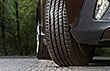
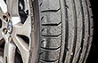
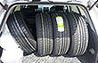
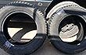
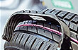

Пархомчик Вячеслав
06.08.2016 в 16:55
Стал обладателем данных покрышек 2 месяца назад. Долго сомневался на счет "Белки", почитав отзывы здесь и проконсультировавшись с продавцами и работниками шиномонтажа решил, нужно брать. Откатал на ней уже 2 тыс. Не шумная, дорогу держит хорошо, в меру мягкая. мокрая дорога - без проблем, кто-то тут писал, что после 110 на мокром асфальте сумасшедшее аквапланирование, я ездил и 130, дорогу держит хорошо, намеков на плавучесть не было. Выскочила булка и пошли трещины по боковине, обратился по гарантии, жду...
Плюсы: Надежность
Минусы: Истираемость




